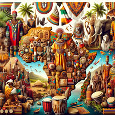
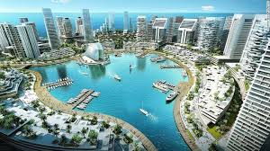
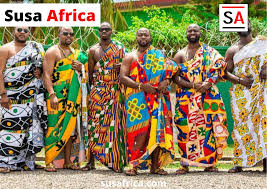

Africa
  1. Egipto • Ubicación: Norte de África, limita con el mar Mediterráneo al norte y con Sudán al sur. • Capital: El Cairo. • Población: Aproximadamente 104 millones de habitantes. • Cultura: Famoso por su rica historia, que incluye las antiguas civilizaciones, pirámides y templos. El arte y la arquitectura faraónica son reconocidos mundialmente. • Economía: Principalmente basada en el turismo, la agricultura y la industria. El Canal de Suez es una vía de navegación crucial para el comercio internacional. 2. Sudáfrica • Ubicación: En el extremo sur del continente africano, limita con el océano Atlántico y el océano Índico. • Capital: Pretoria (administrativa), Ciudad del Cabo (legislativa) y Bloemfontein (judicial). • Población: Aproximadamente 60 millones de habitantes. • Cultura: Conocida como la "nación del arco iris" por su diversidad cultural. Sudáfrica tiene 11 lenguas oficiales y una rica herencia en música, danza y arte. • Economía: Una de las economías más desarrolladas de África, con sectores clave en minería, agricultura, turismo y manufactura. 3. Nigeria • Ubicación: Oeste de África, limita con Benín, Níger, Chad y Camerún. • Capital: Abuya. • Población: Aproximadamente 220 millones de habitantes, es el país más poblado de África. • Cultura: Rica en diversidad étnica, con más de 250 grupos étnicos. Nigeria es conocida por su literatura, cine (Nollywood) y música (afrobeats). • Economía: Basada en la producción de petróleo y gas, agricultura y comercio. Nigeria es uno de los principales productores de petróleo en África.